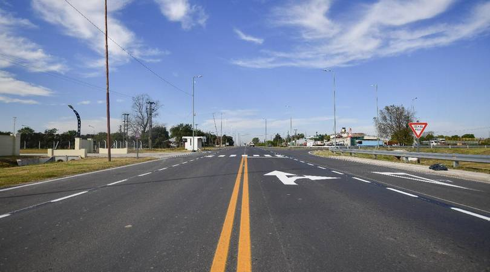

¿Dónde queda el pueblo?
Carabelas es una localidad bonaerense ubicada en el partido de Rojas, en el norte de la provincia de Buenos Aires. Es conocida por su estación ferroviaria, por sus actividades ligadas al campo y sus clubes sociales.
Su ruta de acceso es la Ruta Provincial 31 (RP31) que se encuentra en muy buen estado, ya que hace menos de un año que se repavimentó completamente.

Distancias y rutas para llegar a Carabelas
- 24km de la Ciudad de Rojas, por RP31.
- 55km de la Ciudad de Pergamino, se puede tomar la RN8 o RN188, ambas rutas conectan con la RP31.
- 77km de la Ciudad de Junin, se toma la RN188 y luego la RP31.
- 258km es la distancia a CABA. Se puede tomar RN8 o RN7, ambas conectan con RP31.